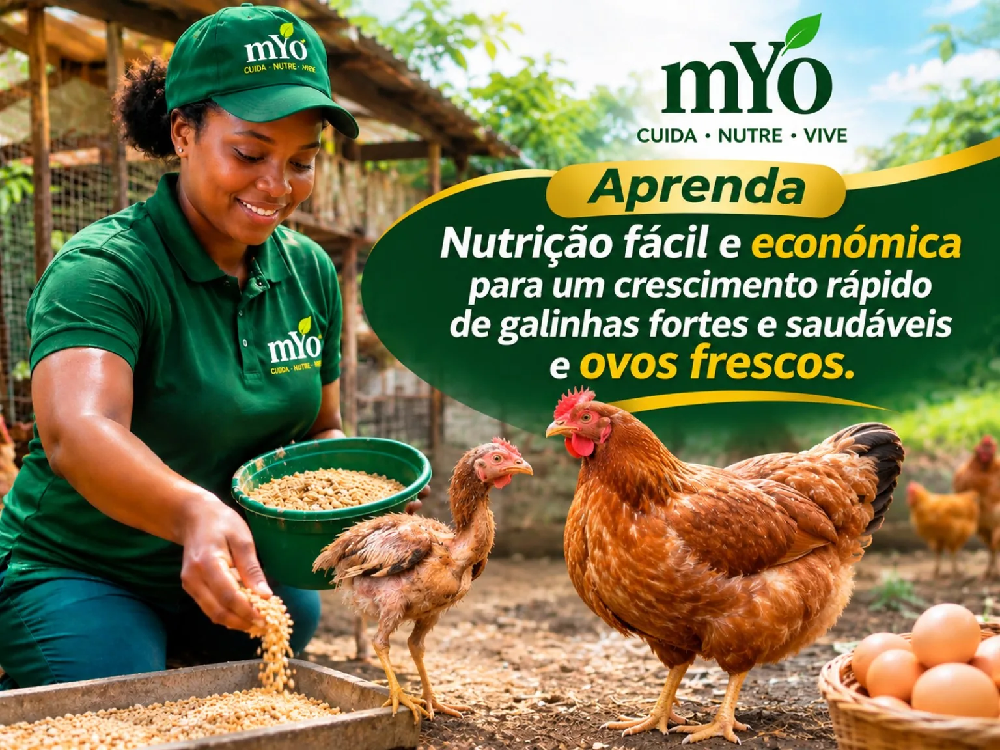
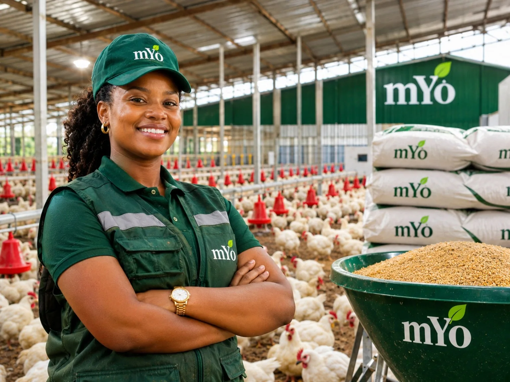
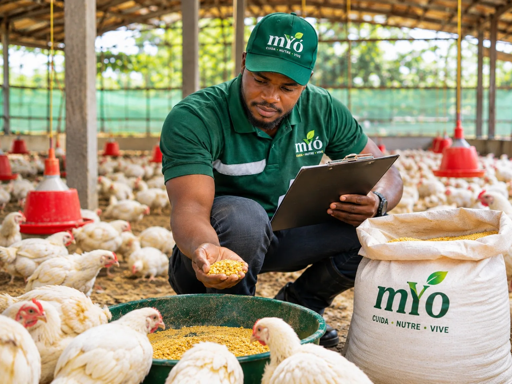
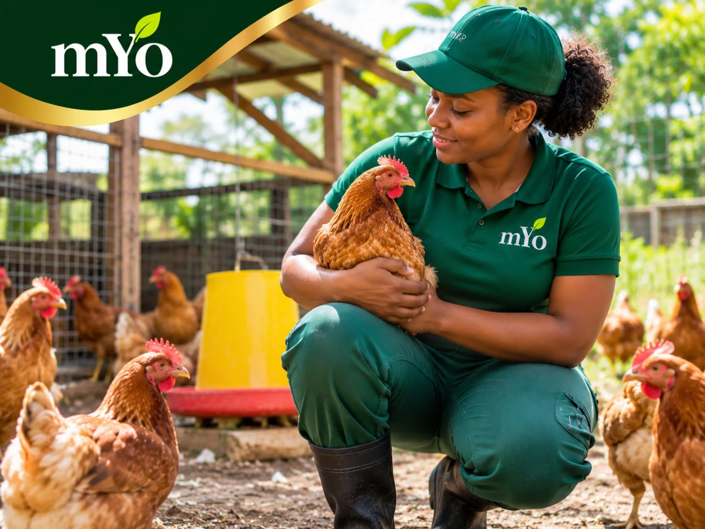
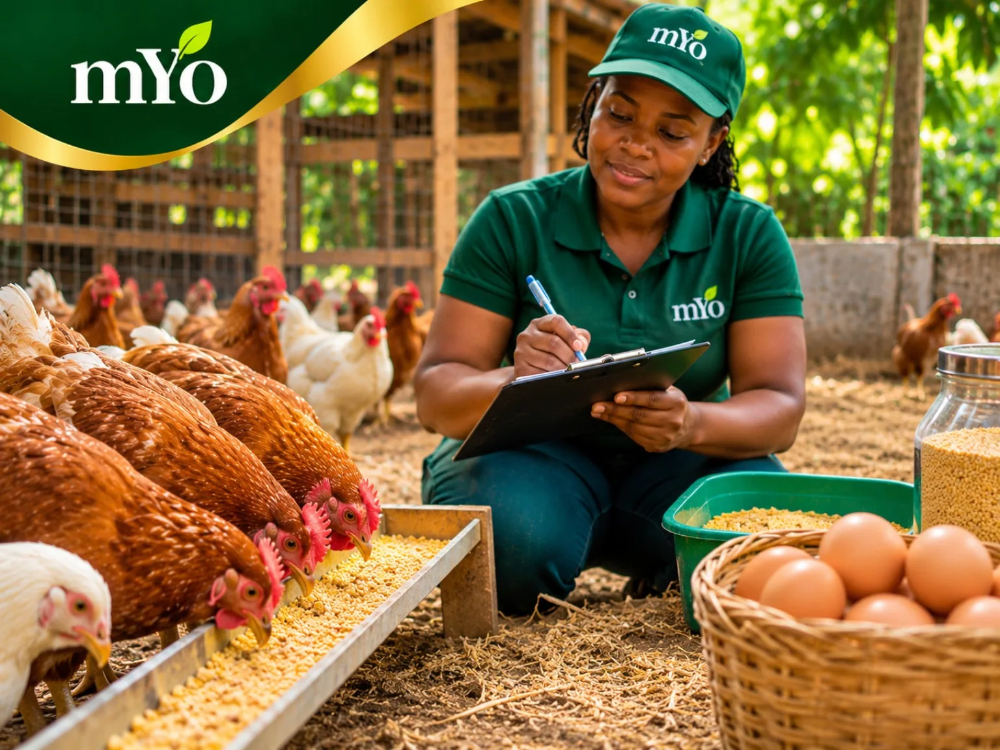
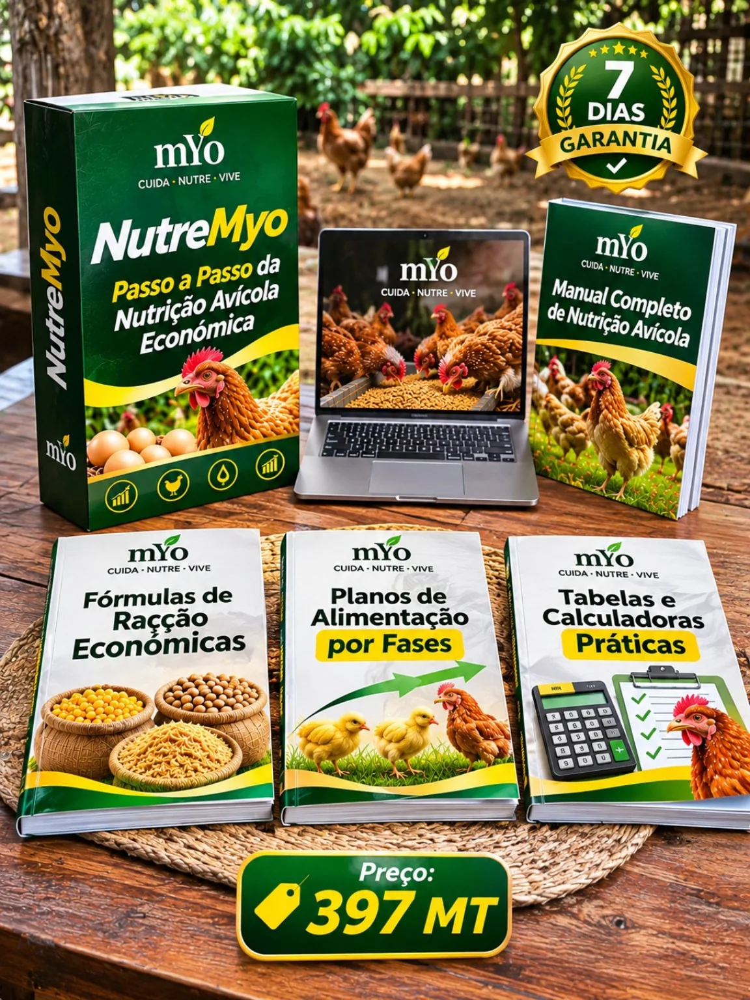

Grande parte do investimento da criação vai directamente para a alimentação.

É gastar muito, desperdiçar alimento e não alcançar o crescimento ou a produção que esperava.

Grande parte do investimento da criação vai directamente para a alimentação.
Uma alimentação mal ajustada pode atrasar o desenvolvimento e reduzir o retorno.
Nas poedeiras, alimentação inadequada pode comprometer a quantidade e a qualidade dos ovos.
Falta de orientação para aproveitar ingredientes disponíveis localmente e gerir melhor os custos.

O guia prático mYō ajuda-o a compreender melhor a alimentação avícola e a procurar uma criação mais eficiente — com decisões orientadas para resultados, não apenas para o preço da ração.

O objectivo é conseguir aves saudáveis, com desenvolvimento adequado e um custo de alimentação que permita proteger o lucro na hora da venda.
O objectivo é manter as aves bem nutridas, apoiar uma postura consistente e controlar quanto custa alimentar para produzir cada ovo.

QUERO DESCOBRIR COMOComece a olhar para cada ingrediente, cada refeição e cada custo como parte do resultado final.

Mais controlo sobre a alimentação. Melhores decisões para a sua produção.
QUERO ACEDER AO GUIA